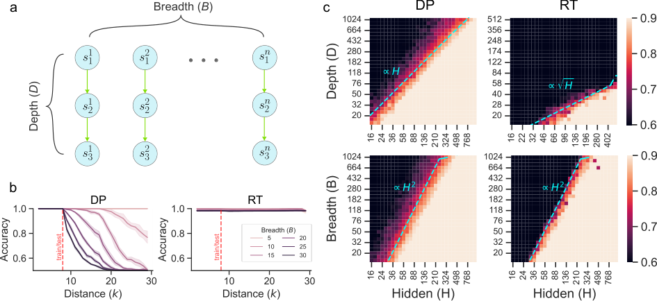
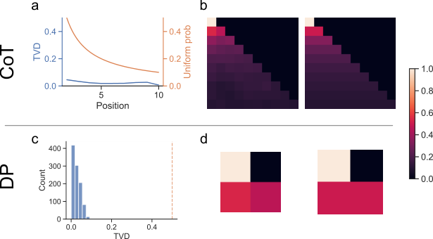

Builds PITA, a 23-million-statement propositional logic dataset whose statements and proofs are written as Lean tactics, with proof states obtained by querying Lean.
Abstract
Recent years have witnessed meteoric progress in reasoning models: neural networks that generate intermediate reasoning traces (RTs) before producing a final output. Despite the rapid advancement, our understanding of how RTs support reasoning, and the limits of this paradigm, remain incomplete. To promote greater clarity, we introduce PITA: a novel large-scale dataset of over 23 million statements in propositional logic and their corresponding proofs. As a benchmark for robust reasoning, we focus on length generalization: if a model is trained to determine truth or falsity on statements with proofs up to fixed length, how well does it generalize to statements requiring longer proofs? We propose notions of (1) task depth and (2) task breadth, which measure respectively (1) the number of steps required to solve an example from a task and (2) the number of unique examples across a task. We vary these quantities across subsets of PITA, and find that RT models generalize well on broad and shallow subsets, while deteriorating on narrow and deep subsets relative to non-RT baselines. To determine whether our results are idiosyncratic to PITA or indicative of general phenomena, we compare our results to a simple synthetic task based on syllogisms. Our resulting theory suggests fundamental scalings that limit how well RT models perform on deep tasks, and highlights their generalization strengths on broad tasks. Our findings overall identify fundamental benefits and limitations inherent in using reasoning traces.
Problem
It is not well understood how reasoning traces help neural networks reason, or where they fail. The study asks how reasoning-trace (RT) models compare with direct-prediction (DP) models on length generalization for logical tasks.
Approach
The authors introduce PITA, a dataset of over 23 million propositional logic statements and 95 billion tokens. Proofs come from a focused proof search, are translated into Lean tactics, and are annotated with proof states obtained from the Lean proof assistant. They define task depth (steps needed to solve an example) and task breadth (number of unique examples), and train RT and DP Transformers on PITA splits with different depth and breadth. A synthetic transitive-inference task with B branches of D symbols each is analyzed theoretically to explain the results.

Figure 3: Transitive inference task. (a) Illustration of the TI task. Symbols are arranged in a series of parallel branches, each consisting of a line of inferences. Breadth is parameterized by the number of branches B , while depth is parameterized by the number of symbols in a branch D . (b) Generalization accuracy for fixed depth D=30 and varying breadth. The red dashed line indicates the max t
Results
RT models generalize well on broad, shallow tasks but fall below DP baselines on narrow, deep tasks. The theory predicts different scaling laws for depth and breadth: DP generalization degrades as breadth grows, while long contexts with uniform attention limit RT performance on deep tasks.

Figure 4: Attention weights are uniform. We show empirically that the attention weights become uniform in a Transformer trained on our transitive inference task. (a) In blue , total variation distance (TVD) between a uniform distribution and the attention weights in an RT model, measured across 1000 examples. The x-axis indicates the position of the query token. In orange , the probability assigne
Prompt
Gen. acc.
Depth
Breadth
DP
α_g ∝ B^-2
D ∝ H
B ∝ H^2
RT
α_g ∝ 1
D ∝ √H
B ∝ H^2
Theoretical scalings for transitive inference (H = hidden width)